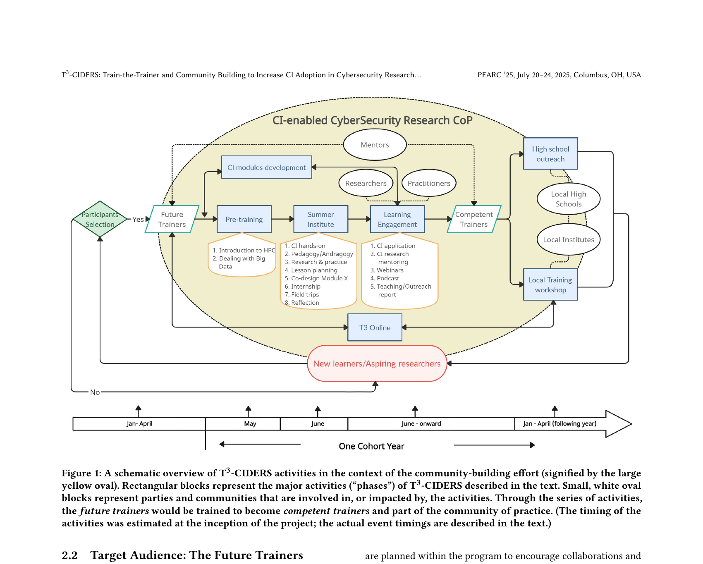

Research-to-Practice · NSF-Funded · Multi-Institution
NSF T3-CIDERS: Designing a Train-the-Trainer System for Cyberinfrastructure Education
A multi-cycle design-based research project building — and iteratively refining — a train-the-trainer program that prepares faculty, researchers, and practitioners to bring cyberinfrastructure skills into cybersecurity classrooms nationwide.
Context
The gap: educators can't teach what they don't know
Cybersecurity education increasingly requires advanced cyberinfrastructure (CI) competencies — data workflows, parallel computing, machine learning tools, HPC environments — yet most instructors were never trained to teach these skills. Even those who understand CI rarely have the pedagogical preparation to teach it effectively or transfer that capacity to their local institutions.
T3-CIDERS (Train-the-Trainer and Community Building to Increase Cyberinfrastructure Adoption in Cybersecurity Research and Education) is an NSF-funded program designed to close this gap. Led collaboratively by Old Dominion University, Texas A&M University, University of Nebraska Omaha, and the University of Arizona, T3-CIDERS trains "Future Trainers" (FTs) — faculty, graduate students, researchers, and practitioners — who then go on to deliver local CI-enabled cybersecurity training at their home institutions.
The program operates as a CI-enabled CyberSecurity Research Community of Practice (CoP), with the explicit goal of building a nationally distributed trainer network capable of multiplying impact far beyond a single workshop.

My Role
Evaluation, instructional design, and material development
My contributions spanned the full program-design and research cycle. On the evaluation side, I designed and implemented data collection instruments — including readiness surveys, daily reflection prompts, and artifact rubrics — and analyzed LMS trace data, participant submissions, and post-teaching implementation reports across cycles. On the instructional design side, I contributed to the structure and scaffolding of the Pre-Training modules and the Summer Institute's pedagogy studio sessions. I also developed participant-facing materials including workshop guides, lesson-plan templates, and transfer support resources.
In parallel, I led the design-based research documentation effort — maintaining the cross-cycle design decision trail and synthesizing evidence into the iteratively refined design principles that form the program's transferable knowledge contribution. The DBR manuscript capturing this work is currently in preparation for submission to BJET / ETR&D.
Design Approach
Multi-cycle DBR: designing, testing, and refining across four cycles
The program used design-based research as its methodological engine — not as a one-shot study, but as a sustained, multi-cycle process where each iteration produced both program improvements and transferable design knowledge. The DBR design unfolded across four cycles:
- Cycle 0 — Baseline synthesis and front-end analysis. Before redesigning anything, we conducted a retrospective synthesis of prior cohort documentation and conference artifacts to map existing constraints, identify design gaps, and produce an initial set of design principles (v0) to guide subsequent cycles. This established the conjecture: if future trainers receive staged technical preparation, explicit pedagogical scaffolding, and structured post-program transfer support, they will produce higher-quality instructional designs and enact more sustainable local CI training.
- Cycle 1 — Pre-Training redesign. The initial Pre-Training structure loaded too much complexity too early, creating uneven readiness by the time participants arrived at the Summer Institute. We expanded CI content modules, added pedagogy foundations, and shifted some outputs to lower-friction formats (brief podcast/write-up artifacts). The redesign was guided by Canvas LMS traces, task output quality, and quick-feedback data collected across the Pre-Training period.
- Cycle 2 — Summer Institute redesign. Early iterations of the Institute relied heavily on lecture delivery, leaving insufficient time for participants to actually design instruction. We restructured the program to front-load foundational content into Pre-Training and use Institute time for discussion, hands-on CI practice, and pedagogy studio blocks — where FTs drafted ABCD-style learning objectives and completed one-page training proposals. Daily reflection data, rubric-scored artifacts, and facilitation logs drove session-level adjustments within and across Institute cohorts.
- Cycle 3 — Post-Institute transfer and sustainability redesign. Even well-prepared trainers struggled to translate their Summer Institute work into local delivery without ongoing support. We designed a structured post-Institute phase: advising check-ins, a local deployment reporting protocol, and community continuation mechanisms including peer-to-peer mentoring and recognition pathways tied to verified transfer milestones. Data came from post-teaching implementation reports and follow-up participation logs.
Program Structure
Three phases designed as a coherent system
One of the core design insights across cycles was that the three program phases — Pre-Training, Summer Institute, and post-Institute Learning Engagement — only work if they are treated as a single coherent system rather than sequential standalone events. Here's how each phase was designed:
Phase 1 · Pre-Training (Jan–Apr, online, ~4 weeks)
Staged asynchronous modules covering CI fundamentals (HPC, data workflows, parallel computing, ML tools), pedagogy foundations, and technical hands-on exercises. Key design choice: offload all prerequisite technical exposure here so that Institute time can be fully devoted to pedagogical production. Artifacts: CI module reflections, short write-ups or podcast summaries demonstrating conceptual grasp.
Phase 2 · Summer Institute (May–June, 1 week in-person)
Intensive residential week alternating technical CI hands-on sessions with pedagogy studio blocks. Participants write ABCD learning objectives, develop one-page training proposals, and build a complete lesson plan for a CI-focused session they will deliver locally. Daily reflections enable same-day facilitation adjustments. Rubric-scored proposal and lesson-plan artifacts serve as both learning outcomes and research data.
Phase 3 · Learning Engagement & Local Transfer (June onward)
Structured follow-through: FTs log local training deliveries, report on implementation outcomes, and receive advising support for adapting materials to their institutional context. Community mechanisms (T3-Online, mentoring, recognition badging) sustain engagement beyond the Institute. K-12 outreach workshops create an additional impact pathway into local high schools.
Design Principles
Eight transferable principles for CI-intensive train-the-trainer design
The primary knowledge contribution of the DBR study is a set of eight refined design principles that emerged from cross-cycle analysis. These are intended to be reusable by other programs designing similar CI-intensive or technically demanding trainer preparation systems:
P1 · Stage technical and pedagogical load
Separate the when and where of technical exposure (Pre-Training) from pedagogical production (Institute). Overloading both in the same phase prevents deep engagement with either.
P2 · Require pedagogical production artifacts
Move FTs from exposure to design enactment through mandatory proposal and lesson-plan outputs. Artifact production is both a learning mechanism and a quality signal that predicts transfer readiness.
P3 · Integrate domain content and pedagogy explicitly
Pair each CI technical concept with explicit pedagogy decision points — how would you teach this? What misconceptions would students have? Without this integration, FTs leave with technical knowledge they cannot translate into instruction.
P4 · Use daily formative reflection loops
Daily structured reflections enable real-time facilitation adjustments within and across Institute days. Rapid analysis (same-day review) is required for this to function as a design tool rather than data collection.
P5 · Treat implementation context as design-relevant data
Non-instructional factors — scheduling constraints, institutional logistics, access barriers — are not noise. Log and analyze them as design inputs that inform transfer support decisions and program sustainability planning.
P6 · Design transfer support by default
Post-Institute local implementation should not be assumed to happen organically. Structured advising check-ins and deployment reporting are required components, not optional supplements.
P7 · Incentivize sustained participation meaningfully
Recognition and badging support continuation — but only when tied to verified transfer milestones rather than attendance alone. Participation incentives without performance anchors produce nominal, not substantive, engagement.
P8 · Maintain a transparent design decision trail
Archive the rationale for every major redesign decision across cycles. This is what transforms local program improvement into transferable design knowledge — and what makes the DBR contribution reusable by others.
Evidence & Publication
PEARC '25 publication + DBR manuscript in preparation
The program's vision, structure, and first-cohort implementation were published at PEARC '25 (Practice and Experience in Advanced Research Computing, Columbus OH, July 2025): T3-CIDERS: Train-the-Trainer and Community Building to Increase Cyberinfrastructure Adoption in Cybersecurity Research and Education (DOI: 10.1145/3708035.3736021). The paper describes the program design, Summer Institute curriculum, and initial cohort outcomes.
The multi-cycle DBR study — documenting the iterative redesign decisions, cross-cycle evidence synthesis, and refined design principles — is the subject of a manuscript currently in preparation for submission to BJET or ETR&D. This paper will constitute the primary research knowledge contribution of the project: a transferable, implementation-oriented T3 design model grounded in four cycles of evidence.
Key Takeaway
Train-the-trainer effectiveness depends on coherent multi-phase design
The central finding across all cycles is that what makes T3-CIDERS work is not any single intervention — not the Summer Institute alone, not the Pre-Training alone — but the coherent design of all three phases as an integrated system with deliberate transitions and explicit transfer infrastructure. Programs that invest only in the intensive training event without designing pre-readiness and post-transfer support produce technically capable participants who cannot multiply that capability in their local contexts. The T3-CIDERS design model shows how to close that gap.